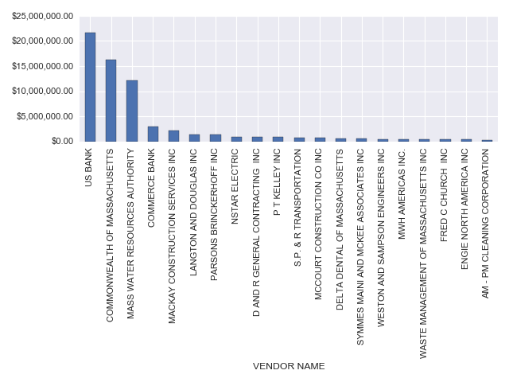
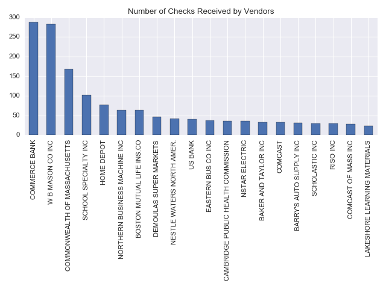

The City of Somerville does a lot of work in each fiscal year involving paying a number of parties for services. Instead of looking at the budget, let’s look at somerville’s paid checks to get a sense of who is paid and why.
Let’s begin by looking at the total amount of money paid out. Somerville has three different categories of Government which pay out money to vendors: General Government, Education, and Public Works.
Most spending on general government which consists something..
Let’s also look at where the money is going. This dataset contains 6,219 checks, which were paid to 1,833 different vendors. Below shows the top paid vendors:

We also show the most commonly paid vendors; that is, vendors who received the most individual checks.

This analysis comes from the dataset Somerville posted TODO: for fiscal year 2017.